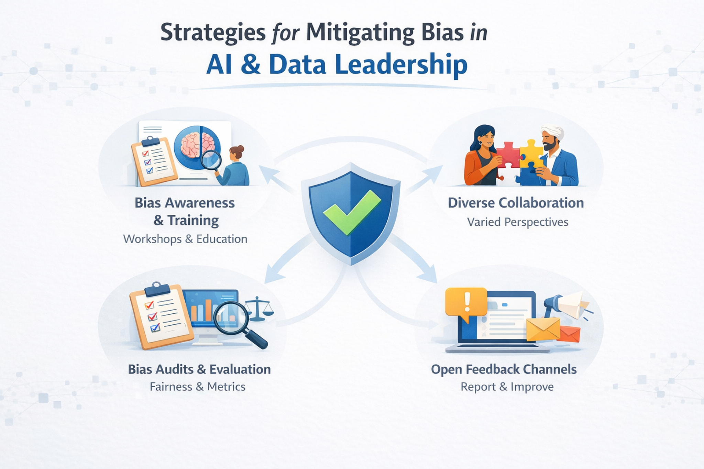

Overview
This artifact reframes an academic discussion on human bias into a portfolio-ready design case. Rather than presenting only text, it communicates responsible AI concepts through structured visuals, concise explanation, and a product-design perspective. The goal is to make fairness in AI understandable, memorable, and relevant to real-world systems.
Objective
The objective of this artifact is to translate responsible AI concepts into a clear, visual, and product-style explanation. The focus is on helping non-technical audiences understand how bias enters AI systems and how it can be mitigated through practical leadership strategies.
What I Learned
- Bias can enter at the data, model, evaluation, and deployment stages.
- High overall accuracy does not automatically mean fair outcomes.
- Responsible AI requires both technical controls and human accountability.
Skills Demonstrated
- Responsible AI and fairness framing
- Visual product communication
- Technical simplification for broad audiences
- Portfolio storytelling with HTML and CSS
Tools and Methods
- AI/ML fairness concepts and research
- Visual design and information structuring
- HTML and CSS for portfolio implementation
- Product-style communication design
Why This Topic Matters
System View
Bias Scales with Automation
When AI is used in lending, hiring, pricing, ranking, or resource allocation, small upstream bias can repeat at scale. That makes fairness a design requirement, not an optional improvement.
Leadership View
Trust Depends on Accountability
Teams need documentation, review checkpoints, feedback loops, and clear ownership so systems are evaluated not only for performance, but also for impact.
Process
- Reviewed course material on AI bias, fairness, and leadership responsibility.
- Identified the major stages where bias can enter AI systems.
- Converted the concepts into structured visual frameworks and comparison graphics.
- Designed a clean, product-style portfolio page that is easy to scan and explain.
Strategy Framework
Bias Awareness
Train teams to question assumptions in data, labels, and business rules.
Diverse Collaboration
Bring in multiple perspectives to catch blind spots earlier in the process.
Bias Audits
Evaluate fairness with more than one metric before launch.
Feedback Loops
Monitor systems after deployment and create clear ways for concerns to be raised.
How I Would Implement This in Practice
01
Document training data sources, labeling logic, and possible proxy variables before modeling begins.
02
Review model performance by group instead of relying only on aggregate accuracy.
03
Add post-deployment monitoring so drift and fairness issues can be caught over time.
Personal Reflection
This artifact changed how I think about AI systems. I realized that building accurate models is not enough. Responsible AI also requires careful attention to fairness, transparency, and accountability. As someone working in data and quantitative systems, that perspective matters when models influence real-world decisions.
Real-World Relevance
In data and quantitative decision systems, biased inputs can lead to unfair outcomes in credit, risk scoring, pricing, and opportunity allocation. This artifact shows how responsible AI thinking can be communicated in a practical and visually accessible way.
Value Demonstrated
- Ability to translate complex AI concepts into clear visual communication
- Understanding of responsible AI and fairness principles
- Bridging technical knowledge with real-world impact
- Creating portfolio-ready, product-style artifacts
Artifact Evidence

Visual 1: Bias mitigation strategy framework showing awareness, collaboration, audits, and feedback loops.

Visual 2: A comparison graphic showing how biased and fair AI systems can produce different outcomes in finance.
Design Goal: Keep the artifact minimal, product-like, and easy to scan while highlighting new learning in AI fairness, bias detection, and trustworthy system design.